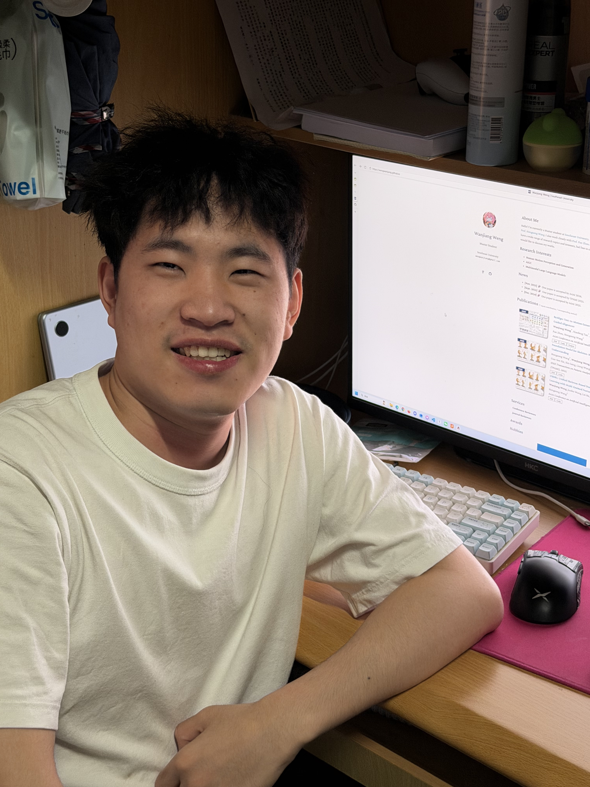
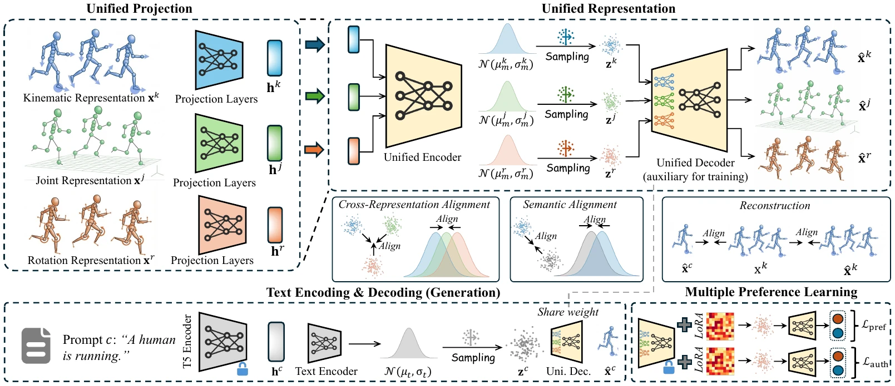
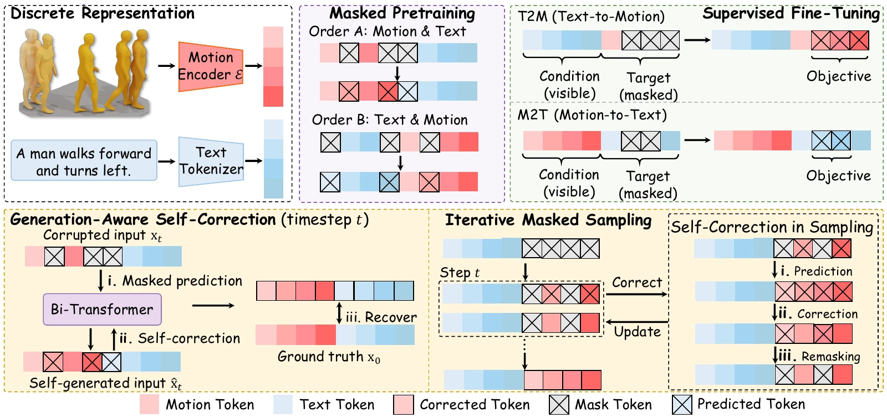
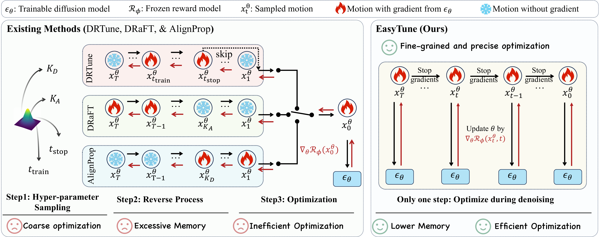
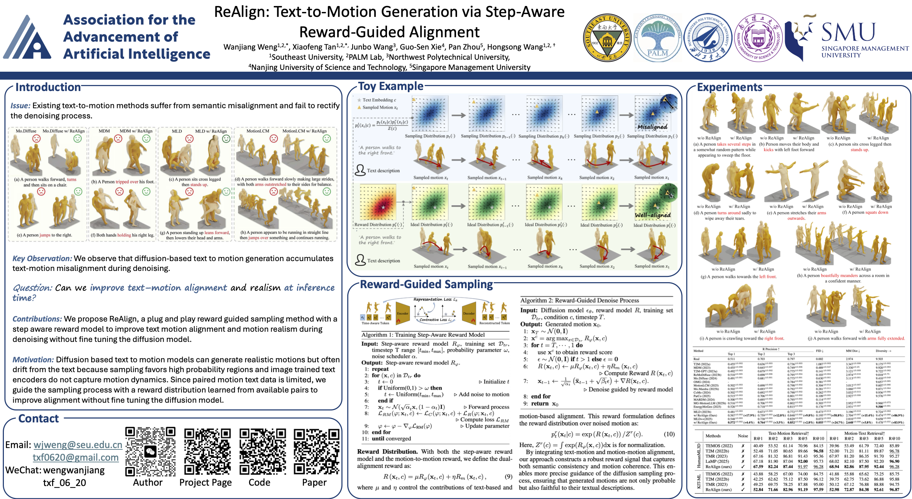
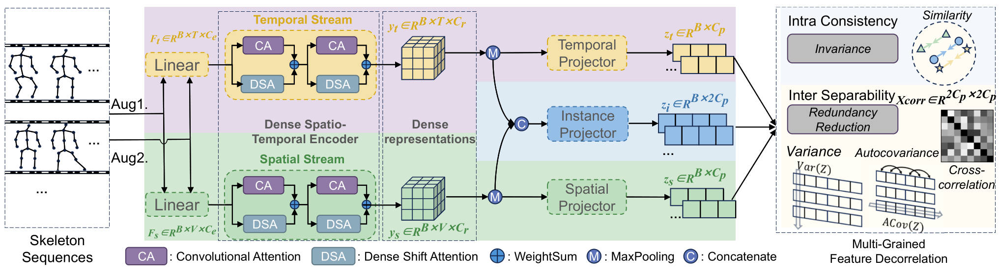
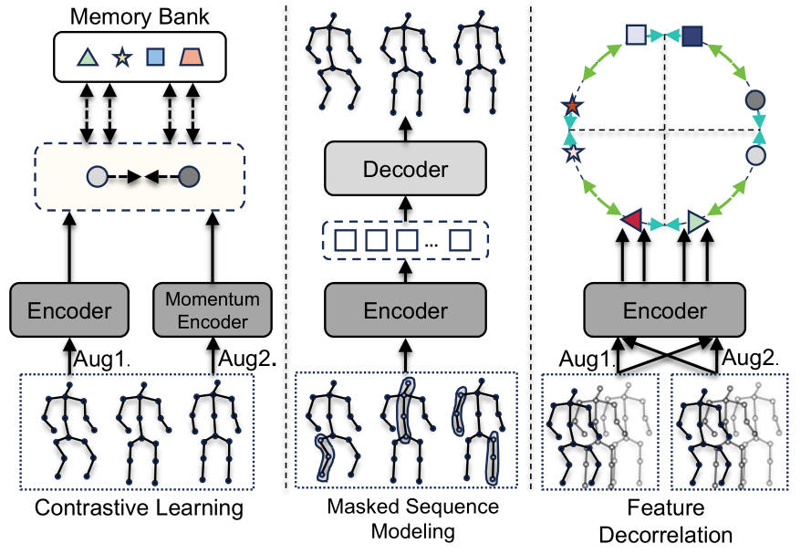

I contributed to the Vimoo video generation foundation model team and was responsible for the Video Enhancer, now deployed as a commercially available API.

Hello! I’m currently a Master student at Southeast University, where I’m fortunate to be supervised by Prof. Hongsong Wang. I also work closely with Prof. Pan Zhou at Singapore Management University. I have a wide range of research topics and interests, feel free to contact me if you have any questions or would like to discuss my works.

TPAMI
NeurIPS
ICLR
AAAI
TPAMI
AAAII contributed to the Vimoo video generation foundation model team and was responsible for the Video Enhancer, now deployed as a commercially available API.